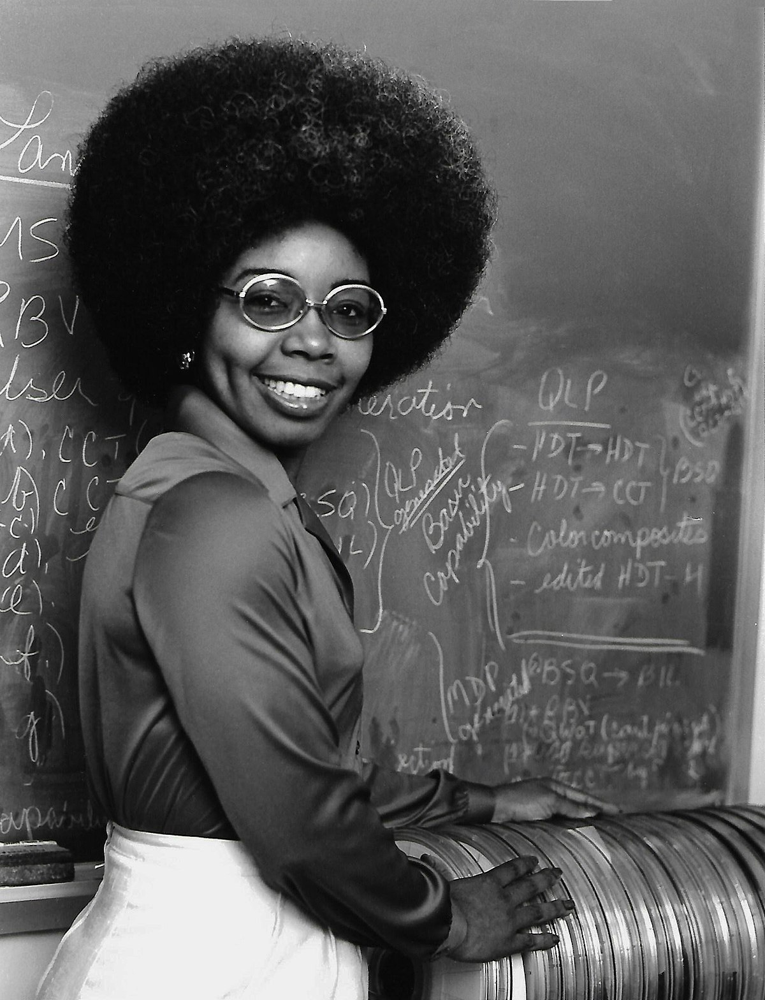

Sobre
Valerie Thomas
Valerie L. Thomas (8 de fevereiro de 1943) é uma cientista e inventora norte-americana. Ela inventou o transmissor de ilusão, para o qual recebeu uma patente em 1980. Ela foi responsável pelo desenvolvimento dos sistemas de processamento de imagens de formatos de mídia digital utilizados nos primeiros anos do programa Landsat.